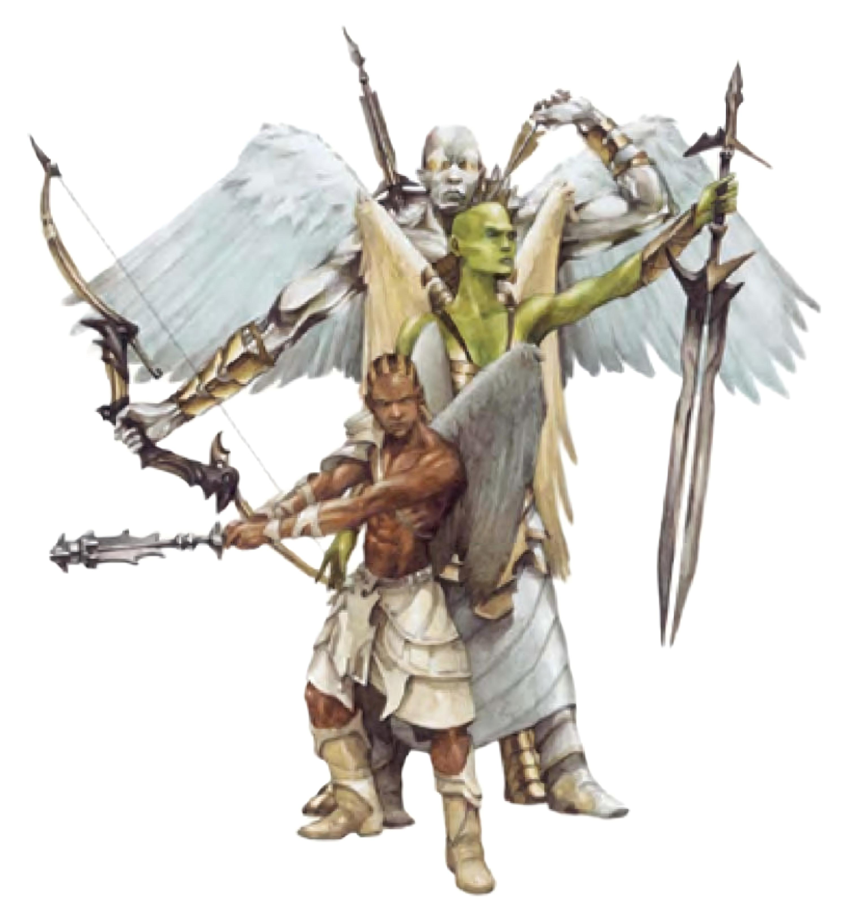

天使是天界种族，住在善良阵营的外层界。天界生物的躯体、灵魂每一部分都充满神性。他们是恶魔与魔鬼（炼狱国度生物）天敌。天使可能属于善良阵营的任一倾向。守序善良的天使住在天界；中立善良的天使住在极乐界或兽原界；混乱善良的天使则住在奥林界。无论倾向为何，天使都不会说谎、欺骗、偷窃。其所有行为均完美高尚，是天界生物中最值得信任往来的一族。
各天使外貌不一，但都因受祝福而美丽。天使通晓天界语、炼狱语、龙语。天使还拥有巧言能力，几乎可和任何生物沟通。
战斗天使高尚善良，但必要时也会毫不犹豫地举起武器捍卫信念。天使并不嗜战，但也不畏惧与敌人交战。战斗时，他们会充分利用自己的机动性与能力，从远处攻击。
天使特性：
美丽高大的人形生物，有着修长的羽毛翅膀，柔软身体因其内在神性而发出光芒，令人难以直视。星界天使照顾并尽其所能地帮助善良阵营等其他弱小生物。他们也是心存善意的界域旅行者与强大生物的保护者。星界天使约7.5英尺高，250磅重。
| 资料栏位 | 星界天使 (Astral Deva) 中型异界生物（天界、外界、善良） |
|---|---|
| 生命骰 | 12d8+48 (102HP) |
| 先攻 | +8 |
| 速度 | 50英尺 (10格)、飞行100英尺 (良好) |
| 防御等级 | 29 (+4敏捷、+15天生)、接触14、措手不及25 |
| 基本攻击/擒抱 | +12 / +18 |
| 攻击 | “+3重型瓦解硬头锤”+21近战 (1d8+12附加震摄)；或挥击+18近战 (1d8+9) |
| 全力攻击 | “+3重型瓦解硬头锤”+21 / +16 / +11近战 (1d8+12附加震摄)；或挥击+18近战 (1d8+9) |
| 占用/触及 | 5英尺/5英尺 |
| 特殊攻击 | 类法术能力、震摄 |
| 特殊能力 | 伤害减免10/邪恶、黑暗视觉60英尺、昏暗视觉、对强酸、寒冷、石化免疫、防护灵光、电击抗力10、火焰抗力10、法术抗力30、巧言、直观闪避 |
| 豁免 | 强韧+14 (对抗毒素+18)、反射+12、意志+12 |
| 属性 | 力量22、敏捷18、体质18、智力18、感知18、魅力20 |
| 技能 | 专注+19、手艺或知识 (任三)+19、交涉+22、脱逃+19、躲藏+19、威吓+20、聆听+23、潜行+19、察言观色+19、侦察+23、绳技+4 (捆绑+6) |
| 专长 | 警觉、顺势斩、强韧加强、精通先攻、猛力攻击 |
| 环境 | 任何善良阵营界域 |
| 组织 | 单独、成双或中队 (3-5) |
| 挑战级数 | 14 |
| 宝藏 | 无钱币、双倍宝物、标准物品 |
| 阵营 | 总是善良 (任何) |
| 进化 | 13-18HD (中型) ; 19-36HD (大型) |
| 等级修正值 | +8 |
星界天使毫不畏惧进行近战。挥动强力的“+3重型瓦解硬头锤”粉碎邪恶敌人是件极富乐趣的事。在计算伤害减免时，星界天使的天生武器与持有武器都视为善良阵营。
类法术能力：随意施展――“援助术”、“不灭明焰”、“侦测邪恶”、“测知谎言”（DC=19）、“反制邪恶”（DC=20）、“解除魔法”、“圣洁灵光”（DC=23）、“圣光击”（DC=19）、“圣言术”（DC=22）、“隐形术”（只对自身有效）、“异界传送”（DC=22）、“移除诅咒”（DC=18）、“移除疾病”（DC=18）、“移除恐惧”（DC=16）；每天7次――“治疗轻伤”（DC=16）、“识破隐形”；每天1次――“剑刃障壁”（DC=21）、“医疗术”（DC=21）。施法者等级12。豁免DC的调整值与魅力调整值相同。
震摄（超自然）：如果星界天使在一轮内用硬头锤连续打到对手两次，对手必须通过强韧检定（DC=22），否则被震摄1d6轮。豁免DC的调整值与力量调整值相同。
直觉闪避（特异）：即使星界天使处于措手不及状态，仍不会失去AC上的敏捷加值。他也不会被夹击，但遇16级以上的游荡者则例外。他亦可夹击具有“直觉闪避”能力的对手，视为12级游荡者。
移形（超自然）：星界天使可以化为任何体型为小型或中型之人形生物形态。
他们像强壮的高大人类。有着光滑的翠绿色皮肤、白色羽翅、光头。异界天使是天界部队的强力将军。他们也帮助强大凡人进行善良任务（尤其当该任务牵涉与魔族的战争时）。异界天使约9英尺高，500磅重。
| 资料栏位 | 异界天使 (Planetars) 大型异界生物（天界、外界、善良） |
|---|---|
| 生命骰 | 14d8+70 (133HP) |
| 先攻 | +8 |
| 速度 | 30英尺 (6格)、飞行90英尺 (良好) |
| 防御等级 | 32 (-1体型、+4敏捷、+19天生)、接触13、措手不及28 |
| 基本攻击/擒抱 | +14 / +25 |
| 攻击 | “+3巨剑”+23近战 (3d6+13 / 19-20)；或挥击+20近战 (2d8+10) |
| 全力攻击 | “+3巨剑”+23 / +18 / +13近战 (3d6+13 / 19-20)；或挥击+20近战 (2d8+10) |
| 占用/触及 | 10英尺/10英尺 |
| 特殊攻击 | 类法术能力、法术 |
| 特殊能力 | 伤害减免10/邪恶、黑暗视觉60英尺、昏暗视觉、对强酸、寒冷、石化免疫、防护灵光、再生10、电击抗力10、火焰抗力10、法术抗力30、巧言 |
| 豁免 | 强韧+14 (对抗毒素+18)、反射+13、意志+15 |
| 属性 | 力量25、敏捷19、体质20、智力22、感知23、魅力22 |
| 技能 | 专注+22、手艺或知识 (任四)+23、交涉+25、脱逃+21、躲藏+17、威吓+23、聆听+23、潜行+21、察言观色+23、搜索+23、侦察+23、绳技+4 (捆绑+6) |
| 专长 | 盲战、顺势斩、精通先攻、精通击破武器、猛力攻击 |
| 环境 | 任何善良阵营界域 |
| 组织 | 单独或成双 |
| 挑战级数 | 16 |
| 宝藏 | 无钱币、双倍宝物、标准物品 |
| 阵营 | 总是善良 (任何) |
| 进化 | 15-21HD (大型) ; 22-42HD (超大型) |
| 等级修正值 | ― |
尽管拥有众多的魔法能力，异界天使仍可高举“+3巨剑”加入近战。他们特别享受与魔族战斗。在计算伤害减免时，异界天使的天生武器与持有武器都视为善良阵营。
再生（特异）：邪恶阵营的武器或“邪恶”性质的法术依然能对异界天使造成正常伤害。
类法术能力：随意施展――“不灭明焰”、“解除魔法”、“圣光击”（DC=20）、“隐形术”（只对自身有效）、“次级复原术”（DC=18）、“移除诅咒”（DC=19）、“移除疾病”（DC=19）、“移除恐惧”（DC=17）、“与死者交谈”（DC=19）；每天3次――“剑刃障壁”（DC=22）、“焰击术”（DC=21）、“律令震摄”、“死者复活”、“疲乏波”；每天1次――“地震术”（DC=24）、“高等复原术”（DC=23）、“集体魅惑怪物”（DC=24）、“衰弱波”。施法者等级17。豁免DC的调整值与魅力调整值相同。
法术：异界天使施法时视同17级牧师。异界天使可由下列领域择二：风、破坏、善良、秩序、战争（加上其神�o的任何其他领域）。豁免DC的调整值与感知调整值相同。
一般已准备牧师法术（6/8/8/7/7/6/6/4/3/2；豁免检定DC=16+法术等级）：零级――“造水术”、“侦测魔法”、“神导术”、“提升抗力”（2）、“恩赐”；一级――“祝福术”（2）、“惊恐术”、“神眷”（2）、“熵光护盾”、“造成轻伤”、“虔诚护盾”；二级――“援助术”、“同化武器”、“坚韧术”、“蛮力术”（2）、“崇敬术”、“耀眼术”、“人类定身术”；三级――“疫病术”、“昼明术”、“消除隐形”、“祈祷术”（2）、“三级召唤怪物术”、“风墙术”；四级――“防死结界”、“驱逐术”、“造成致命伤”、“中和毒性”（2）、“四级召唤怪物术”；五级――“破除结界”、“破灭法阵”、“反制邪恶”、“正义烙印”、“异界传送”、“正气如虹”；六级――“放逐术”、“高等解除魔法”、“重伤术”、“医疗术”、“英雄宴”、“集体治疗中度伤”；七级――“律言”、“解离术”、“圣言”、“再生术”；八级――“圣洁灵光”、“集体治疗致命伤”、“秩序护盾”；九级――“内爆术”、“九级召唤怪物术”（善良）。
移形（超自然）：异界天使可以化为任何体型为小型或中型之人形生物形态。
炽天使是最强大的天使。只有最强大的魔族才堪匹敌。拉动“+5斩空巨剑”射出追命箭的炽天使更加可怕。他们像强壮的高大人类。有着明亮的黄玉色瞳孔、金色（或金色）皮肤、闪烁的白色翅膀。炽天使的声音深沉威严，约9英尺高，500磅重。炽天使是力量强大的善良斗士。只有最顶级的恶魔才堪匹敌。拉动“+2复合长弓”射出追命箭的炽天使更加可怕。
| 资料栏位 | 炽天使 (Solar) 大型异界生物（天界、外界、善良） |
|---|---|
| 生命骰 | 22d8+110 (209HP) |
| 先攻 | +9 |
| 速度 | 50英尺 (10格)、飞行150英尺 (良好) |
| 防御等级 | 35 (-1体型、+5敏捷、+21天生)、接触14、措手不及30 |
| 基本攻击/擒抱 | +22 / +35 |
| 攻击 | “+5斩空巨剑”+35近战 (3d6+18 / 19-20)；或“+2复合长弓” (+5力量加值) +28远程 (2d6+7 / x3附加追命)；或挥击+30近战 (2d8+13) |
| 全力攻击 | “+5斩空巨剑”+35 / +30 / +25近战 (3d6+18 / 19-20)；或“+2复合长弓” (+5力量加值) +28 / +23 / +18远程 (2d6+7 / x3附加追命)；或挥击+30近战 (2d8+13) |
| 占用/触及 | 10英尺/10英尺 |
| 特殊攻击 | 类法术能力、法术 |
| 特殊能力 | 伤害减免15/史诗且邪恶、黑暗视觉60英尺、昏暗视觉、对强酸、寒冷、石化免疫、防护灵光、再生15、电击抗力10、火焰抗力10、法术抗力32、巧言 |
| 豁免 | 强韧+18 (对抗毒素+22)、反射+18、意志+20 |
| 属性 | 力量28、敏捷20、体质20、智力23、感知25、魅力25 |
| 技能 | 专注+30、手艺或知识 (任五)+33、交涉+34、脱逃+30、躲藏+26、聆听+32、潜行+30、搜索+31、察言观色+32、法术辨识+31、侦察+32、生存+7 (追踪+9)、绳技+5 (捆绑+7) |
| 专长 | 顺势斩、闪避、强力顺势斩、精通先攻、精通击破武器、灵活移动、猛力攻击、追踪 |
| 环境 | 任何善良阵营界域 |
| 组织 | 单独或成双 |
| 挑战级数 | 23 |
| 宝藏 | 无钱币、双倍宝物、标准物品 |
| 阵营 | 总是善良 (任何) |
| 进化 | 23-33HD (大型) ; 34-66HD (超大型) |
| 等级修正值 | ― |
炽天使是力量强大的善良斗士。只有最顶级的恶魔才堪匹敌。拉动“+2复合长弓”射出追命箭的炽天使更加可怕。在计算伤害减免时，异界天使的天生武器与持有武器都视为善良阵营与史诗。
再生（特异）：邪恶阵营与史诗的武器或“邪恶”性质的法术依然能对炽天使造成正常伤害。
类法术能力：随意施展――“援助术”、“活化物体”、“通神”、“不灭明焰”、“次元锚”、“高等解除魔法”、“圣光击”（DC=21）、“禁锢术”（DC=26）、“隐形术”（只对自身有效）、“次级复原术”（DC=19）、“移除诅咒”（DC=20）、“移除疾病”（DC=20）、“移除恐惧”（DC=18）、“抵抗能量伤害”、“七级召唤怪物术”、“与死者交谈”（DC=20）、“疲乏波”；每天3次――“剑刃障壁”（DC=23）、“地震术”（DC=25）、“医疗术”（DC=23）、“集体魅惑怪物”（DC=25）、“魔法恒定术”、“复生术”、“衰弱波”；每天1次――“高等复原术”（DC=24）、“律令目盲”、“律令死亡”、“律令震摄”、“虹光喷射”（DC=24）、“愿望术”。施法者等级20。豁免DC的调整值与魅力调整值相同。
法术：炽天使施法时视同20级牧师。炽天使可由下列领域择二：风、破坏、善良、秩序、战争（加上其神�o的任何其他领域）。豁免DC的调整值与感知调整值相同。
一般已准备牧师法术（6/8/8/8/7/7/6/6/5/5；豁免检定DC=17+法术等级）：零级――“造水术”、“侦测魔法”、“神导术”（2）、“提升抗力”（2）；一级――“祝福术”（2）、“惊恐术”、“神眷”（2）、“熵光护盾”、“隐雾术”、“虔诚护盾”；二级――“同化武器”、“坚韧术”、“蛮力术”（2）、“崇敬术”、“耀眼术”、“人类定身术”；三级――“昼明术”、“消除隐形”、“反邪恶法阵”、“魔化防具”、“祈祷术”（2）、“防护能量伤害”、“风墙术”；四级――“防死结界”（2）、“驱逐术”（2）、“神能”、“中和毒性”（2）；五级――“破除结界”、“操控风相”、“反制邪恶”、“异界传送”、“正气如虹”（2）、“痛苦徽记”；六级――“放逐术”、“连环闪电”、“英雄宴”、“集体治疗中度伤”、“亡灵归亡”、“回返真言”；七级――“操控天气”、“灰飞烟灭”、“律言”、“幻化灵体”、“圣言”、“再生术”；八级――“火焰风暴”、“圣洁灵光”、“集体治疗致命伤”（2）、“旋风术”；九级――“同游灵界”、“元素战队”（风）、“集体医疗术”、“奇迹术”、“复仇风暴”。
*领域法术。领域：风、战争。
移形（超自然）：炽天使可以化为任何体型为小型或中型之人形生物形态。